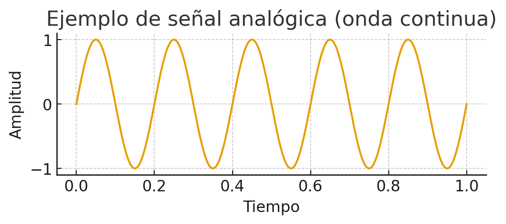
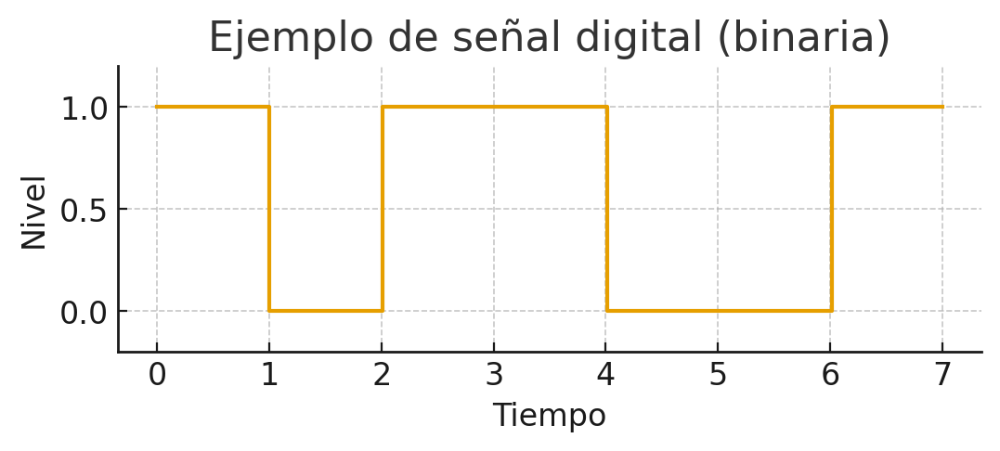
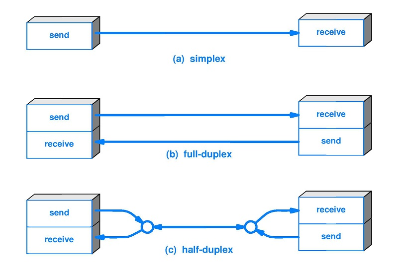
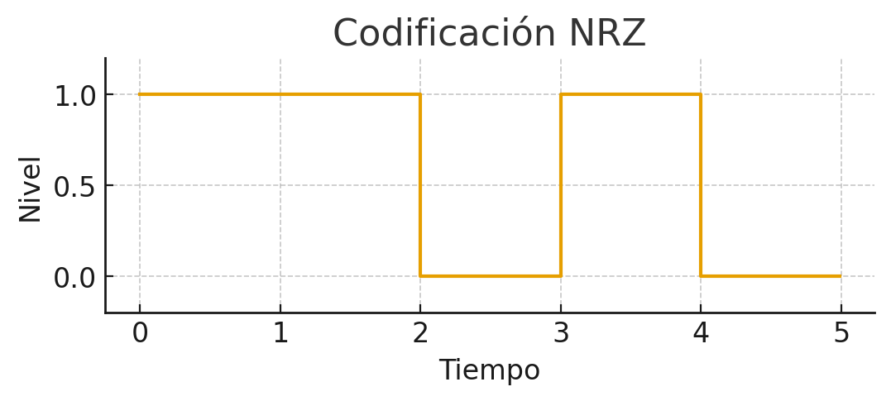
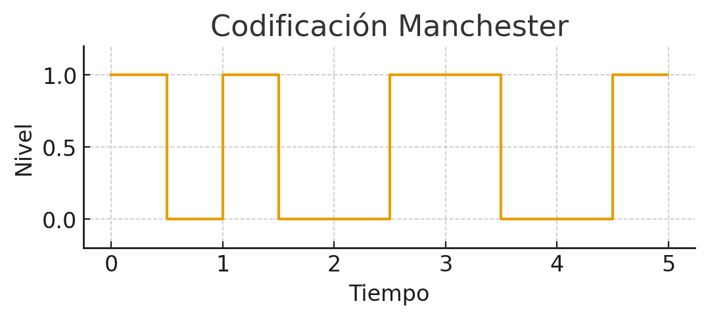
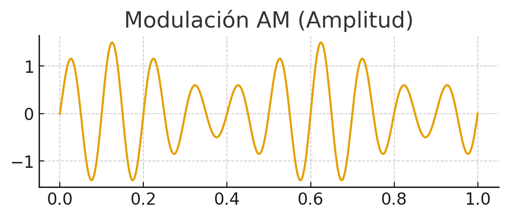
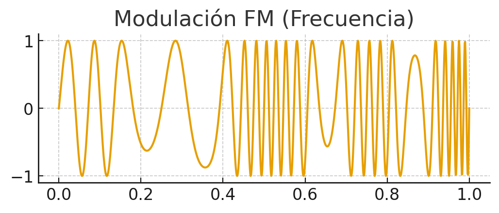
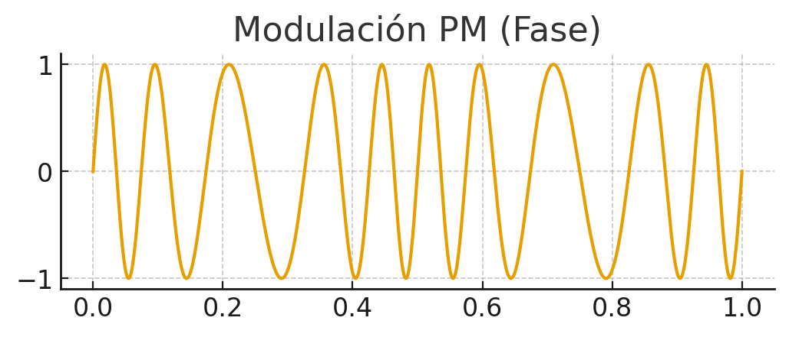

Transmisión y perturbaciones¶
- Transmisión: es el proceso de enviar datos de un punto a otro a través de un medio (cable, fibra, ondas de radio, etc.).
- Perturbación: son los problemas o interferencias que pueden afectar a la señal durante su viaje y hacer que llegue distorsionada o con errores.
En este bloque vamos a profundizar en cómo se transmiten los datos en una red, qué tipos de transmisión existen, qué técnicas se utilizan y qué problemas pueden aparecer durante la comunicación.
Tipos de transmisión¶
Los tipos de transmisión se clasifican en función de distintos criterios: la naturaleza de la señal, el número de señales transmitidas y la dirección de la comunicación.
Según la naturaleza de la señal¶
- Transmisión analógica
- Señal continua en el tiempo.
- Se caracteriza por su amplitud, frecuencia y fase.
- Ejemplo: voz en una línea telefónica.
- Inconveniente: más sensible al ruido.
{kind=link}

- Transmisión digital
- Señal discreta (0 y 1).
- Más robusta frente a interferencias.
- Ejemplo: datos en Ethernet o WiFi.
- Inconveniente: necesita convertir la señal analógica a digital.
{kind=link}

Según el número de señales simultáneas¶
- Serie
- Los bits viajan uno detrás de otro por una única línea.
- Adecuado para largas distancias y simplifica el cableado.
- Ejemplo: comunicaciones por puerto serial, USB, enlaces Ethernet (a nivel lógico).

- Paralelo
- Varios bits se transmiten al mismo tiempo por diferentes conductores.
- Adecuado para cortas distancias debido a problemas de sincronización y diafonía.
- Ejemplo: antiguos buses de impresora, conexiones internas de PC.

Según la dirección de transmisión¶
-
Símplex
- Comunicación en un solo sentido: emisor → receptor.
- Ejemplo: emisión de TV por antena. -
Half-Dúplex
- Ambos extremos pueden transmitir, pero no simultáneamente.
- Ejemplo: walkie-talkies; redes que usan un solo canal compartido. -
Full-Dúplex
- Transmisión simultánea en ambos sentidos.
- Ejemplo: llamadas por teléfono, enlaces Ethernet modernos.
{kind=link}

Técnicas de transmisión¶
Las técnicas de transmisión permiten adaptar los datos al medio físico. Podemos distinguir dos grandes grupos: digital y analógica.
Transmisión digital¶
Se basa en codificación de línea (cómo se representan los 0 y 1 en la forma de la señal).
- NRZ (No Return to Zero)
- Representa 1 por un nivel alto y 0 por un nivel bajo, sin retorno al cero entre bits.
- Problema: largas secuencias de 0 o de 1 dificultan la sincronización.
{kind=link}

- Manchester
- Cada bit tiene una transición en la mitad del periodo: garantiza sincronización.
- Consume más ancho de banda, pero facilita la detección de bordes.
{kind=link}

Transmisión analógica¶
Se usa una onda portadora (sinusoidal) y se modifica alguna de sus propiedades para transmitir la información.
- AM / ASK (Amplitud) — la amplitud de la portadora varía según la señal.
{kind=link}

- FM / FSK (Frecuencia) — la frecuencia de la portadora cambia para representar datos.
{kind=link}

- PM / PSK (Fase) — se modula la fase de la portadora (muy usada en sistemas digitales sobre portadora analógica).
{kind=link}

Perturbaciones en la transmisión¶
El medio de transmisión no es perfecto. La señal puede degradarse y llegar al receptor con errores. Los principales problemas son:
Atenuación¶
- Pérdida de energía de la señal conforme avanza por el medio.
- Causas: resistencia eléctrica, dispersión en fibras, pérdidas por conectorización mal hecha.
- Soluciones: repetidores, amplificadores, uso de medios con menor pérdida (fibra óptica).
Distorsión¶
- La señal se deforma porque diferentes componentes de frecuencia viajan a distintas velocidades (dispersión).
- Impacto: borrado de los pulsos o superposición entre símbolos (ISI — inter-symbol interference).
- Soluciones: ecualización, uso de codificaciones y filtros adecuados.
Ruido¶
Interferencia aleatoria que se suma a la señal original y puede provocar errores. Tipos frecuentes:
- Ruido térmico: debido a la agitación térmica de los electrones dentro del conductor. Se distribuye uniformemente por todo el espectro de frecuencias, se le conoce como ruido blanco y no puede eliminarse.
- Intermodulación: señales no deseadas con la misma frecuencia que la original compartiendo el mismo medio, provocan una suma o diferencia en esa frecuencia contaminando la señal original.
- Diafonía: los conductores o líneas de transmisión próximos producen una acoplamiento entre los mismos debido al campo electromagnético que generan.
- Ruido impulsivo: ruido no continuo que consiste en pulsos irregulares poca duración (varios segundos), causado por perturbaciones electromagnéticas externas. como picos breves de tensión producidos por motores, relés o descargas atmosféricas.
Soluciones: apantallamiento, pares trenzados, filtrado, corrección de errores (FEC), aislamiento y buenas prácticas de instalación.
Ejemplo práctico:
cables de red sin buena separación pueden sufrir diafonía si se colocan paralelos a cables eléctricos; la solución pasa por canalizaciones, separación y/o usar cable apantallado (FTP/STP).
Actividad¶
-
AC 108 (RA1 / CE1a, CE1c y CE1d / IC1 / 3p). Identifica y documenta ejemplos reales de transmisión de datos y perturbaciones en redes locales, aplicando los conceptos vistos en clase.
-
Busca ejemplos reales de los siguientes conceptos:
- Tipos de transmisión: analógica, digital, serie, paralelo, simplex, half-dúplex, full-dúplex.
- Técnicas de transmisión: NRZ, Manchester, AM, FM, PM.
- Perturbaciones: atenuación, distorsión, ruido térmico, intermodulación, diafonía, ruido impulsivo.
-
Para cada ejemplo, indica:
- Dónde se encuentra (entorno doméstico, empresa, centro educativo, etc.).
- Qué tipo de transmisión o perturbación representa.
- Cómo afecta al funcionamiento de la red.
- Qué solución se aplica o podría aplicarse.
-
Presenta tus resultados en un documento con los siguientes elementos:
- Tabla resumen con los ejemplos encontrados.
- Imágenes o esquemas si es posible.
-